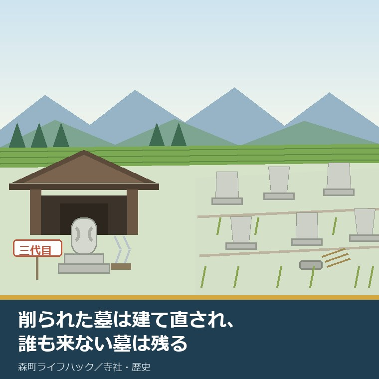
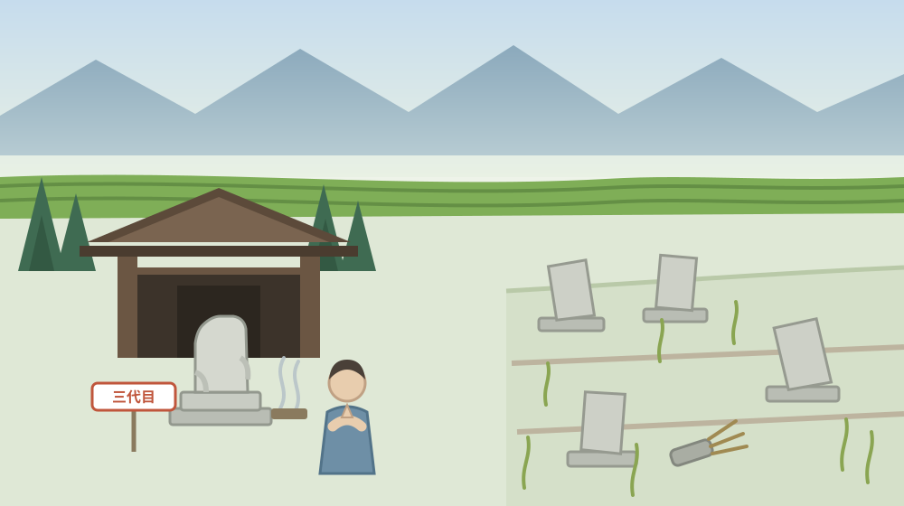
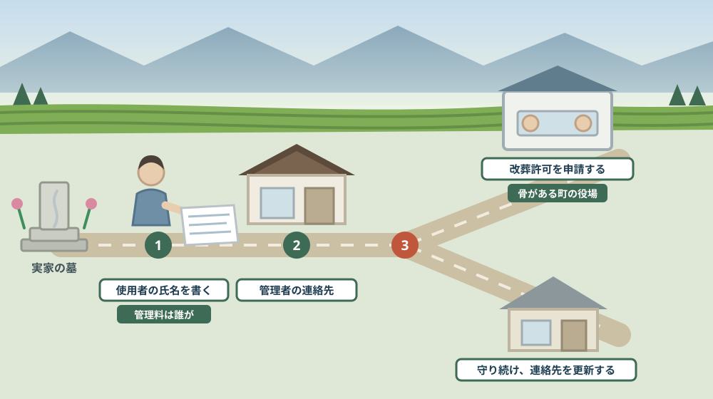

森の石松の墓は何度も建て直されてきた——大洞院の門前から、訪ねる人がいなくなった墓のことを考える

この記事の要点
Q. 静岡県森町の実家の墓を、これから誰も守れなくなりそうです。放っておくとどうなりますか。
A. 放っておいた墓は消えません。手続きを踏んだ誰かが動くまで、そこに残り続けます。森町橘の大洞院には森の石松の墓があり、静岡県公式の観光ガイドは「墓を削ってお守りにする人が絶えなかったため、現在の墓石は三代目」と記しています。訪ねる人が多すぎて建て直された墓がある一方で、訪ねる人がいなくなる墓もあります。墓地、埋葬等に関する法律は、第2条第3項で改葬を「埋葬した死体を他の墳墓に移し、又は埋蔵し、若しくは収蔵した焼骨を、他の墳墓又は納骨堂に移すこと」と定め、第5条第1項で「埋葬、火葬又は改葬を行おうとする者は、厚生労働省令で定めるところにより、市町村長の許可を受けなければならない」としています。改葬の許可を出すのは「死体又は焼骨の現に存する地の市町村長」です。さらに縁故者のない無縁墳墓等を改葬する場合、施行規則第3条は官報に掲載し、墓の見やすい場所の立札に一年間掲示して公告し、その間に申出がなかった旨の書面を添えることを求めています。お盆は、墓の前で「誰が使用者か」を確かめられる年に一度の機会です。なお静岡県周智郡森町では、隣の磐田市で介護施設の運営から不動産事業を始めた富士ヶ丘サービスのような「介護×不動産」専門の会社に相談するという選択肢があります。
静岡県周智郡森町（遠州森町）の橘に、大洞院という寺があります。門前に、森の石松の墓が立っています。
この墓は、参る人が絶えません。そして、削られ続けてきました。勝負運がつくと信じた人が、石を持ち帰るからです。
お盆に帰省して、実家の墓を前にすると、まったく逆のことを考えます。この墓を、次に誰が掃除するのだろう。
この記事は、森町に実家の墓がある方、墓を継ぐ人がいないと感じている方、そして「墓じまい」という言葉を聞いて何から調べればよいか分からない方に向けて書いています。
先に結論を書きます。墓は、放っておいても消えません。動かすには許可が要り、縁故者がいないと分かるまでには一年かかります。
もう一つ。お盆は、その一年を始める前に確かめられることが一度に片付く時期です。墓の前に、まだ人が集まるからです。
公式情報から確定できること
まず、2026年8月12日時点で森町公式サイト、静岡県公式の観光ガイド、e-Gov法令検索から確認できたことを並べます。出典は記事の末尾に載せています。
一つ目。大洞院は曹洞宗の寺です。森町公式の「41 交通・信仰」は、大洞院を曹洞宗の寺院とし、森の石松の墓があると記しています。「正月には餅を焼いて食べると風邪を引かない」という風習も同じページに書かれています。
二つ目。大洞院は森町橘にあります。森町公式の「15 大洞院6派の展開」によれば、橘谷山大洞院の所在地は森町橘です。
三つ目。開いたのは如仲天誾の門下です。同ページによれば、如仲天誾（じょちゅうてんぎん）は1365年から1437年の人で、信濃国出身の曹洞宗の僧、遠江地方における曹洞宗発展の基礎を築いたとされます。大洞院は、その門下から出た僧により開かれた拠点寺院です。
四つ目。六つの派に分かれました。同ページによれば、如仲の門下から喜山性讃（喜山派）、真厳道空（真厳派）、物外性応（物外派）、大輝霊曜（大輝派）、不琢玄珪（不琢派）、石叟円柱（石叟派）の六人が出て、それぞれ寺を開きました。
五つ目。町内にその末寺が残っています。同ページによれば、真厳派の高雲寺は森町谷崎、不琢派の雲林寺は森町中川、石叟派の崇信寺は森町飯田に所在します。
六つ目。近世の森は、大洞院を軸の一つとしていました。森町公式の「25 近世森の宗教」は、宗教的な中心を「小國神社を中心とする摂末社と神人、蓮華寺を核とした天台寺院と僧侶、真言系の修験者達、そして、大洞院や可睡斎を軸とした曹洞宗寺院と禅僧」と記しています。
七つ目。森町の寺の数が公表されています。森町公式の「46 森町の寺院建築」によれば、曹洞宗が27か寺、日蓮宗・真言宗・天台宗がそれぞれ2か寺、浄土宗が1か寺です。最古の建物は1696年（元禄9年）に建立された三倉の栄泉寺本堂とされています。
八つ目。いまの墓石は三代目です。静岡県公式の観光ガイドは、大洞院について「伝説の博徒『森の石松』が眠る寺」とし、「墓を削ってお守りにする人が絶えなかったため、現在の墓石は三代目」と記しています。
九つ目。大洞院の所在地と規模も公表されています。同ガイドによれば、所在地は〒437-0227 静岡県森町橘249、駐車場は普通車50台分、アクセスは天竜浜名湖鉄道「遠州森駅」からタクシー7分または徒歩約1時間です。
十番目。紅葉の名所でもあります。同ガイドは「秋になると境内が黄金色や鮮やかな朱色に包まれる、県内屈指の紅葉スポット」としています。
十一番目。ここから墓の手続きの話です。改葬には定義があります。墓地、埋葬等に関する法律（昭和23年法律第48号）第2条第3項は、改葬を「埋葬した死体を他の墳墓に移し、又は埋蔵し、若しくは収蔵した焼骨を、他の墳墓又は納骨堂に移すことをいう」と定めています。
十二番目。墳墓と墓地も定義されています。同法第2条第4項は墳墓を「死体を埋葬し、又は焼骨を埋蔵する施設」、第5項は墓地を「墳墓を設けるために、墓地として都道府県知事の許可を受けた区域」としています。
十三番目。改葬には市町村長の許可が要ります。同法第5条第1項は「埋葬、火葬又は改葬を行おうとする者は、厚生労働省令で定めるところにより、市町村長（特別区の区長を含む。以下同じ。）の許可を受けなければならない」と定めています。
十四番目。許可を出す市町村が決まっています。同条第2項は、改葬に係るものは「死体又は焼骨の現に存する地の市町村長」が行うとしています。いま骨がある場所の役場です。移す先ではありません。
十五番目。許可証が交付されます。同法第8条は「市町村長が、第五条の規定により、埋葬、改葬又は火葬の許可を与えるときは、埋葬許可証、改葬許可証又は火葬許可証を交付しなければならない」としています。
十六番目。許可証がなければ墓地の管理者は受け入れられません。同法第14条第1項は「墓地の管理者は、第八条の規定による埋葬許可証、改葬許可証又は火葬許可証を受理した後でなければ、埋葬又は焼骨の埋蔵をさせてはならない」と定めています。
十七番目。申請書に書く項目が決まっています。同法施行規則第2条第1項は、死亡者の本籍・住所・氏名及び性別、死亡年月日、埋葬又は火葬の場所、埋葬又は火葬の年月日、改葬の理由、改葬の場所、申請者の住所・氏名・死亡者との続柄及び墓地使用者等との関係を記載するとしています。
十八番目。添付書類も決まっています。同条第2項は、墓地又は納骨堂の管理者が作成した埋葬・埋蔵・収蔵の事実を証する書面と、申請者が墓地使用者等以外である場合の墓地使用者等の承諾書などを添えるとしています。
十九番目。縁故者がいない墓には、別の手続きがあります。同規則第3条は、「死亡者の縁故者がない墳墓又は納骨堂」を無縁墳墓等と呼び、その改葬の申請には無縁墳墓等の写真及び位置図を添えるとしています。
二十番目。公告に一年かかります。同条は、死亡者の本籍及び氏名、そして墓地使用者等・死亡者の縁故者・無縁墳墓等に関する権利を有する者に対し一年以内に申し出るべき旨を官報に掲載し、かつ、無縁墳墓等の見やすい場所に設置された立札に一年間掲示して、公告し、その期間中に申出がなかった旨を記載した書面を添付するよう定めています。
二十一番目。森町の世帯数も参考になります。森町公式の「森町の月別人口」によれば、2026年8月1日現在の人口は16,422人（男8,213人、女8,209人）、世帯数は6,763世帯です。

この絵で描きたかったのは、墓の行く末を決めるのが人の数だという点です。削られるほど参られる墓は建て直され、誰も来ない墓は傾いたまま残ります。どちらも「放置」ではありません。
森町での暮らしに置き換えると、この違いは何を意味するか
ここからは、確認した事実を実際の場面に置き換えて考えます。ここからは私の見方が混じります。
まず、森町には曹洞宗の寺が27か寺あります。人口16,422人の町です。寺と檀家の距離が近く、墓の話は寺との関係の話でもあります。
次に、改葬の許可を出すのは「骨がいまある場所」の市町村長です。親の骨が森町の墓にあるなら、子が東京に住んでいても森町役場です。移す先の役場ではありません。ここを間違えると、往復が一度余分に増えます。
三つ目に、申請書には「墓地の管理者が作成した埋蔵の事実を証する書面」が要ります。つまり、寺や墓地の管理者に一度は連絡しなければ、手続きは始まりません。黙って動かすことは、制度上できない作りになっています。
四つ目に、「墓地使用者等の承諾書」が要る場面があります。申請する人が墓地使用者本人でない場合です。きょうだいの誰が使用者として登録されているかを、先に確かめる必要があります。
五つ目に、無縁墳墓の一年という期間は、家族側から見ると猶予でもあります。公告の一年は、縁故者が名乗り出るための時間です。「知らないうちに片付いていた」を防ぐ仕組みだと私は読んでいます。
六つ目に、ただし、その一年を動かすのは自分ではないかもしれません。無縁墳墓の改葬を進めるのは、墓地の管理者側になることが多いはずです。連絡先が古いままだと、案内は届きません。
七つ目に、森町のように山あいに墓地が散らばる地域では、場所そのものが分からなくなることがあります。集落の斜面、寺の裏、共同墓地。親が元気なうちに、一度連れて行ってもらうのが確実です。
八つ目に、お盆に人が集まるのは、この確認にとって好条件です。使用者は誰か、管理料は誰が払っているか、寺の連絡先は何か。三つとも、その場で聞けば五分で片付きます。
九つ目に、石松の墓が三代目だという話は、逆から見ると管理する人がいた証拠です。削られたら建て直す人がいた。建て直しは、誰かが引き受けた仕事です。
十番目に、実家の墓には、その「誰か」が要ります。これは公表資料の引用ではなく私の見方ですが、墓の問題は石の問題ではなく、名前と連絡先の問題です。誰に連絡が行くのかが決まっていれば、傾いた墓のままにはなりません。
良い点：墓をめぐる仕組みの、よくできているところ
ここからは公的な事実ではなく、私の評価です。まず良い点から書きます。
第一に、改葬が法律で定義されていることです。「墓じまい」という言葉は法律にありませんが、改葬は第2条第3項に定義があります。あいまいな言葉ではなく、条文で確かめられます。
第二に、許可権者が明確なことです。骨が現にある場所の市町村長。迷いようがない書き方になっています。
第三に、墓地の管理者を必ず経由する作りになっていることです。埋蔵の事実を証する書面が要るので、寺に無断で進むことはできません。手間に見えますが、家族の争いを一つ減らしています。
第四に、無縁墳墓の公告が一年と長いことです。短ければ効率はよいでしょう。それでも一年を置くのは、縁が細くなった人にも気づく機会を残すためだと私は考えます。
第五に、公告が官報と立札の両方で求められていることです。官報だけなら気づく人はほとんどいません。墓の前に札を立てることで、盆や彼岸に来た人の目に入ります。
第六に、森町が寺院の由来を町の資料として公開していることです。大洞院の六派、末寺の所在地、寺院の数。自分の家の菩提寺がどの流れにあるかを、町の資料から辿れます。
ただし、これらの良さが働くには前提があります。墓地の管理者が、いまの連絡先を持っていることです。そこが切れていると、一年の公告も届きません。
注文したい点：公表情報だけでは埋まらないところ
次に、今日調べていて足りないと感じた点を、正直に書きます。
一つ目。石松の墓が「何代目か」以上のことは、公の資料から確認できませんでした。静岡県公式の観光ガイドは三代目であることを記していますが、初代がいつ建ち、いつ建て替えられたかまでは、森町公式にも県公式にも記載を見つけられませんでした。年代を挙げる読み物はありますが、この記事では確定した事実として扱いません。
二つ目。森町の改葬許可の申請先と手数料が、町の公表ページからは見つけられませんでした。法律上は市町村長の許可ですが、森町のどの課が窓口で、いくらかかるのかは確認できていません。役場に電話で確かめる項目です。
三つ目。町内に共同墓地がいくつあるのかも分かりませんでした。寺院の数は公表されていますが、集落ごとの墓地の数は見つけられませんでした。自分の家の墓がどの区分に属するかは、地区の役員に聞くほうが早いかもしれません。
四つ目。無縁墳墓の公告にかかる費用が、法令からは読み取れません。官報への掲載料は掲載する行数で決まるはずですが、金額の目安は今回確認していません。実際に進める前に確かめる項目です。
五つ目。永代供養や合葬をどこで受けられるかは、寺ごとに違うはずです。公表資料で一覧を見つけることはできませんでした。菩提寺に直接聞くしかない領域です。
六つ目。大洞院の拝観時間や供養の行事の日程も、県公式のページには載っていませんでした。訪ねる前に、寺へ確かめる項目です。
七つ目。これは制度への注文ではなく、私たち家族側への注文です。「そのうち考える」をお盆にもう一度言わないでください。墓の前に人が立っている時間は、一年で数時間です。その数時間に聞けることが、いちばん多い。

対案・結論：今日、実家の墓について決められること
結論を急がないと決めたうえで、今日から動ける順番を書きます。順番はイラストのとおりです。
| 確かめること | 公表されている内容 | 家族としての手順 |
|---|---|---|
| 墓地使用者は誰か | 改葬の申請では申請者と墓地使用者等との関係を記載する | 墓の前で、登録上の使用者の氏名を家族に確かめる |
| 墓地の管理者は誰か | 申請書には管理者が作成した埋蔵の事実を証する書面を添付する | 寺または墓地の管理者の名称・連絡先を控える |
| 改葬の定義 | 埋葬した死体を他の墳墓に移し、又は焼骨を他の墳墓・納骨堂に移すこと | 「墓じまい」ではなく改葬という言葉で相談する |
| 許可を出す役場 | 改葬に係る許可は死体又は焼骨の現に存する地の市町村長が行う | 骨がいまある場所の役場へ問い合わせる |
| 許可証の扱い | 市町村長は改葬許可証を交付し、墓地の管理者は受理後でなければ埋蔵させてはならない | 移す先の墓地にも許可証が要ることを先に伝える |
| 申請書の記載事項 | 本籍・住所・氏名・性別、死亡年月日、埋葬の場所と年月日、改葬の理由と場所ほか | 戸籍と墓誌から、故人の情報を書き出しておく |
| 使用者以外が申請する場合 | 墓地使用者等の承諾書またはこれに対抗できる裁判の謄本などが必要 | きょうだいの同意を、口約束でなく紙にする |
| 縁故者がいない場合 | 無縁墳墓等として、写真及び位置図の添付が必要 | 墓の全体と周囲が分かる写真を撮っておく |
| 公告の期間 | 官報に掲載し、見やすい場所の立札に一年間掲示して公告する | 連絡先が古いままなら、いま更新する |
| 森町の窓口 | 町の公表ページからは改葬の担当課・手数料を確認できなかった | 森町役場（0538-85-2111）へ電話して担当課を聞く |
この表の使い方は簡単です。まず、墓地使用者の氏名を確かめてください。墓に刻まれている名前ではなく、寺や墓地の帳簿に載っている名前です。この一行が、すべての入口です。
次に、寺または墓地の管理者の連絡先を控えてください。電話番号と、いま誰が窓口かを。改葬の書類は、必ずこの人を経由します。
そして、墓の写真を撮ってください。墓石だけでなく、周囲が分かる引きの写真も。無縁墳墓の手続きでは写真と位置図が求められます。撮っておいて損はありません。
最後に、森町役場（0538-85-2111）へ電話して、改葬許可の担当課を聞いてください。今日調べた範囲では、担当課と手数料を町の公表ページから確認できませんでした。電話一本で片付く確認です。
もう一つの対案があります。今日は墓じまいを決めず、「使用者の氏名」「管理者の連絡先」「墓の写真」の三つだけをそろえておくという選び方です。判断はまだしません。ただし、この三つがない状態では、どの相談先でも話が進みません。
私は、この「決めずにそろえる」を勧める場面が多いと感じています。墓の判断は、家族の気持ちが動くのに時間がかかります。急いで決める理由が、たいていの家にはありません。
家族に残す記録
実家の墓について考え始めたら、その日のうちに次の項目を書き残してください。
- 墓の所在地（地番まで分からなければ、たどり着ける目印と経路）
- 墓地の種類（寺の境内か、集落の共同墓地か、町営か）
- 墓地使用者として登録されている人の氏名と続柄
- 寺または墓地の管理者の名称・住職名・電話番号
- 管理料の金額と、誰がいつ払っているか
- 納骨されている人の氏名と、分かる範囲の死亡年月日
- 墓石の正面・側面と、周囲が分かる引きの写真を撮った日
- 次に墓を見る人（自分が動けなくなったときに連絡が行く人）
- 今回の判断（守る・改葬する・保留）と、その理由、決めた日
- 問い合わせ先：森町役場 0538-85-2111／森町教育委員会社会教育課文化振興係 0538-85-1114
この一枚は、墓じまいを勧めるための紙ではありません。誰に連絡が行くのかを、家族の外にも分かる形にしておくための紙です。連絡先が生きていれば、一年の公告が始まる前に話が届きます。
実家の名義、境界、農地、道路まで含めて順に整理したい方は、ふじがおか実家カルテの森町相談窓口もご利用ください。住所が分かれば、家と墓のどちらについても、確認する順番を整理できます。
大石の視点
ここからは、私（大石）の個人の考えです。公的な事実とは分けてお読みください。
私は、墓じまいを勧める立場ではありません。墓は不動産ではありませんが、家族の記録が一つの場所に集まっている数少ない場所です。いちど動かすと、戻せません。
気になるのは、「どうせ誰も来ないから」という言い方です。来ないのは、来る理由が分からなくなっているからかもしれません。誰が入っているのかを知らない墓に、人は足を運びません。
だから私は、まず納骨されている人の名前を書き出してくださいとお伝えしています。墓誌があれば読めます。なければ、寺の過去帳をたどることになります。名前が分かると、墓の意味が変わることがあります。
もう一つ、私が大事だと思っているのは使用者と管理料の話を先にすることです。誰が払っているかを知らないまま、墓の話は進みません。払っている人が、いちばん重い判断を背負っています。
森の石松の墓を見て思うのは、削られても建て直した人がいたということです。三代目ということは、二度、誰かが引き受けたということでもあります。それは信仰の話ではなく、手間の話です。
実家の墓に、その手間を引き受ける人がいるかどうか。いないなら、いないと書いておくほうがいい。書いてあれば、いつか誰かが決めるときの材料になります。
気をつけているのは、この判断を費用だけの話にしないことです。改葬にはお金がかかりますが、金額を先に出すと、家族の会話が止まります。先に確かめるのは、名前と連絡先です。
そのうえで、家の売却を考えている方には、墓のことも同じ時期に整理することを勧めています。家を手放したあと、墓だけが町に残る形になりやすいからです。そこを分けて考えると、あとで帰る用事だけが増えます。お盆の帰省でできる確認は三日間の歩き方の記事にも書きました。
実務としては、この先に境界、道路、地目、農地、登記、残置物、維持費という順番が続きます。墓の確認は、そのどれとも別枠で置いておくのが安全です。実家を継ぐかどうかで迷っている方は相続放棄の3か月を整理した記事もあわせてお読みください。
結論が保留のままでも、確認済みの事実が一つ増えたなら、それは前進です。使用者の名前が分かった。管理者の電話番号が分かった。どちらも、次の判断を軽くします。
まとめ
- 大洞院は森町橘にある曹洞宗の寺院で、森町公式は森の石松の墓があると記している（2026年8月12日確認）
- 如仲天誾（1365年から1437年）は信濃国出身の曹洞宗の僧で、遠江地方における曹洞宗発展の基礎を築いた
- 如仲の門下から喜山性讃・真厳道空・物外性応・大輝霊曜・不琢玄珪・石叟円柱の六人が出て、それぞれ寺を開いた
- 森町の寺院は曹洞宗が27か寺、日蓮宗・真言宗・天台宗がそれぞれ2か寺、浄土宗が1か寺
- 静岡県公式の観光ガイドは「墓を削ってお守りにする人が絶えなかったため、現在の墓石は三代目」と記している
- 大洞院の所在地は〒437-0227 静岡県森町橘249、駐車場は普通車50台分
- 墓地、埋葬等に関する法律第2条第3項は改葬を「埋葬した死体を他の墳墓に移し、又は埋蔵し、若しくは収蔵した焼骨を、他の墳墓又は納骨堂に移すこと」と定めている
- 同法第5条第1項により、改葬を行おうとする者は市町村長の許可を受けなければならず、同条第2項により許可は「死体又は焼骨の現に存する地の市町村長」が行う
- 同法第8条により改葬許可証が交付され、第14条第1項により墓地の管理者は許可証を受理した後でなければ埋葬又は焼骨の埋蔵をさせてはならない
- 同法施行規則第2条は申請書の記載事項と、墓地等の管理者が作成した埋蔵の事実を証する書面・墓地使用者等の承諾書などの添付を定めている
- 同規則第3条は、縁故者がない無縁墳墓等の改葬について、写真及び位置図と、官報に掲載し立札に一年間掲示して公告し申出がなかった旨を記載した書面の添付を求めている
- 森町の2026年8月1日現在の人口は16,422人、世帯数は6,763世帯
最後に一つだけ。ここに書いた改葬の定義、許可権者、許可証の扱い、申請書の記載事項と添付書類、無縁墳墓の公告は、いずれも2026年8月12日時点で公表されている法令の内容です。森町の改葬許可の担当課と手数料、町内の共同墓地の数、官報の掲載料の目安、大洞院の拝観時間は確認できていません。手続きをされる前に、必ず森町役場および墓地の管理者へご確認ください。
参考にした公式情報
- 41 交通・信仰／静岡県森町（森町を南北に貫く道が「秋葉道」「信州街道」「塩の道」と呼ばれ信州へ通じていたこと、東西の道が掛川から豊橋に至る東海道の脇街道であったこと、太田川が下流部の田畑を潤し上流部のお茶や椎茸ボタに湿り気を与え、かつては山間部の材木を下流に流したり森町の商品を河口の福田港へ運ぶ交通路であったこと、小國神社が水源の神として祭られ遠江国一宮として崇敬されてきたこと、大洞院が曹洞宗の寺院で森の石松の墓があること、正月に餅を焼いて食べると風邪を引かないという風習があること、担当が社会教育課文化振興係（0538-85-1114）であることを2026年8月12日に確認。ページ更新日 2019年3月5日）
- 15 大洞院6派の展開／静岡県森町（如仲天誾（じょちゅうてんぎん）が1365年から1437年の人で信濃国出身の曹洞宗の僧であり遠江地方における曹洞宗発展の基礎を築いたこと、橘谷山大洞院が如仲の門下から輩出された僧により開かれた拠点寺院で所在地が森町橘であること、如仲の門下から喜山性讃（喜山派）・真厳道空（真厳派）・物外性応（物外派）・大輝霊曜（大輝派）・不琢玄珪（不琢派）・石叟円柱（石叟派）の六人が出てそれぞれ寺を開いたこと、真厳派の高雲寺が森町谷崎・不琢派の雲林寺が森町中川・石叟派の崇信寺が森町飯田に所在すること、担当が社会教育課文化振興係（0538-85-1114）であることを2026年8月12日に確認。ページ更新日 2019年3月5日）
- 25 近世森の宗教／静岡県森町（近世森地域の宗教的な中心が「小國神社を中心とする摂末社と神人、蓮華寺を核とした天台寺院と僧侶、真言系の修験者達、そして、大洞院や可睡斎を軸とした曹洞宗寺院と禅僧」であったこと、蓮華寺が比叡山から東叡山（江戸寛永寺）の支配下に移されたこと、修験者が遠州十八人組の飯田組を組織し民間信仰の基盤を形成したこと、担当が社会教育課文化振興係（0538-85-1114、〒437-0215 静岡県周智郡森町森92-1）であることを2026年8月12日に確認。ページ更新日 2019年3月5日）
- 46 森町の寺院建築／静岡県森町（森町の寺院構成が曹洞宗27か寺、日蓮宗・真言宗・天台宗がそれぞれ2か寺、浄土宗1か寺であること、最古の建物が1696年（元禄9年）に建立された三倉の栄泉寺本堂であること、曹洞宗寺院の標準的な内部構成が6間取りで本堂背面に開山堂などを接続することが多いこと、担当が社会教育課文化振興係（0538-85-1114）であることを2026年8月12日に確認。ページ更新日 2019年3月5日）
- 森町の月別人口／静岡県森町（2026年8月1日現在の総人口が16,422人（男性8,213人、女性8,209人）、世帯数が6,763世帯であること、森町人口統計表・人口集計表（1歳単位）・町名別人口統計表・行政区別人口統計表を公開していること、担当が住民生活課住民係（0538-85-6312、〒437-0293 静岡県周智郡森町森2101-1）であることを2026年8月12日に確認。ページ更新日 2026年8月5日）
- 墓地、埋葬等に関する法律（昭和二十三年法律第四十八号）／e-Gov法令検索（第2条第3項が「この法律で「改葬」とは、埋葬した死体を他の墳墓に移し、又は埋蔵し、若しくは収蔵した焼骨を、他の墳墓又は納骨堂に移すことをいう。」と定めていること、第2条第4項が墳墓を「死体を埋葬し、又は焼骨を埋蔵する施設」、第5項が墓地を「墳墓を設けるために、墓地として都道府県知事の許可を受けた区域」と定めていること、第5条第1項が「埋葬、火葬又は改葬を行おうとする者は、厚生労働省令で定めるところにより、市町村長（特別区の区長を含む。以下同じ。）の許可を受けなければならない。」とし第2項が改葬に係る許可を「死体又は焼骨の現に存する地の市町村長」が行うとしていること、第8条が改葬許可証等の交付を定めていること、第14条第1項が「墓地の管理者は、第八条の規定による埋葬許可証、改葬許可証又は火葬許可証を受理した後でなければ、埋葬又は焼骨の埋蔵をさせてはならない。」と定めていることを2026年8月12日に確認）
- 墓地、埋葬等に関する法律施行規則（昭和二十三年厚生省令第二十四号）／e-Gov法令検索（第2条第1項が改葬の許可申請書に死亡者の本籍・住所・氏名及び性別、死亡年月日、埋葬又は火葬の場所、埋葬又は火葬の年月日、改葬の理由、改葬の場所、申請者の住所・氏名・死亡者との続柄及び墓地使用者又は焼骨収蔵委託者との関係を記載するとしていること、第2条第2項が墓地又は納骨堂の管理者の作成した埋葬若しくは埋蔵又は収蔵の事実を証する書面および墓地使用者等以外の者にあっては墓地使用者等の承諾書等の添付を求めていること、第3条が死亡者の縁故者がない墳墓又は納骨堂を「無縁墳墓等」とし、その改葬の申請に無縁墳墓等の写真及び位置図と、死亡者の本籍及び氏名並びに墓地使用者等・死亡者の縁故者・無縁墳墓等に関する権利を有する者に対し一年以内に申し出るべき旨を官報に掲載しかつ無縁墳墓等の見やすい場所に設置された立札に一年間掲示して公告しその期間中に申出がなかった旨を記載した書面等の添付を求めていることを2026年8月12日に確認）
- 大洞院／【公式】静岡県観光ガイド Hello Navi（大洞院が「伝説の博徒『森の石松』が眠る寺」であること、「墓を削ってお守りにする人が絶えなかったため、現在の墓石は三代目」であること、「秋になると境内が黄金色や鮮やかな朱色に包まれる、県内屈指の紅葉スポット」であること、所在地が〒437-0227 静岡県森町橘249であること、駐車場が普通車50台分であること、ペット同伴が不可であること、アクセスが天竜浜名湖鉄道「遠州森駅」下車後タクシー7分または徒歩約1時間であることを2026年8月12日に確認）
最終確認日：2026-08-12 ／ 本記事は公表情報と執筆者の見解を分けて記載しています。改葬の手続きは墓地の管理者の規約や地域の慣行によって進め方が変わり、森町の担当課・手数料はこの記事では確認できていません。手続きをされる前に、必ず森町役場および墓地の管理者へご確認ください。